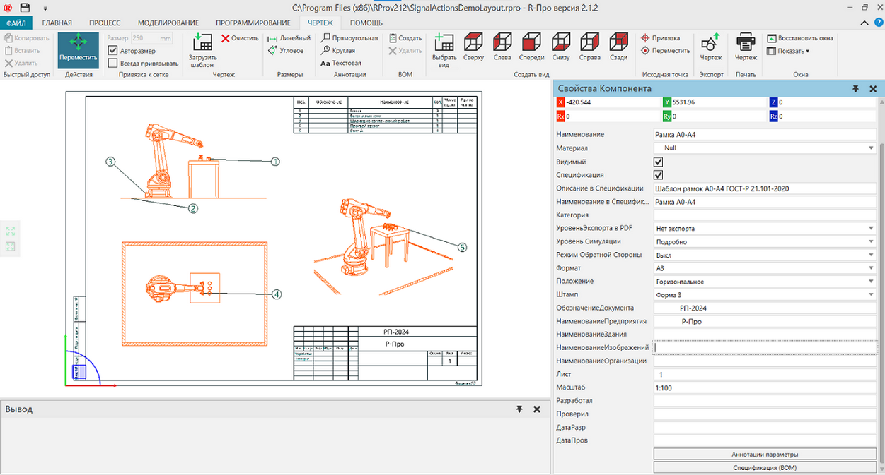

Вкладка Чертеж позволяет создавать, экспортировать и печатать технические чертежи.


Доступ
Чтобы получить доступ к чертежу:
·Щелкните вкладку Чертеж.
Панели
На вкладке Чертеж по умолчанию отображаются следующие панели.:
·Свойства для чтения и записи свойств выбранных объектов в чертеже. Сюда входят такие элементы планировки, как аннотации, размеры и ортогональные чертежи.
·Вывод, для отображения информационных сообщений.
Контекст
Контекст чертежного вида — технический чертеж..
Вы можете:
·Импортировать шаблоны чертежей и подготовливать документы для печати.
·Создавайть чертежи 3D-мира вручную и автоматически, используя стандартные ортогональные виды.
·Масштабировать, изменять размер и отмечать чертежи с помощью аннотаций, размеров и спецификаций.
·Экспортировать чертежи в виде векторной графики и файлов САD.
Команды
По умолчанию следующие команды отображаются на ленте при переходе на вкладку Чертеж.
Название |
Описание |
|---|---|
Копировать |
Копирует текущий выбор в буфер обмена. |
Вставить |
Добавляет содержимое буфера обмена в активную область или поле рабочей области в зависимости от типа данных. |
Удалить (Быстрый доступ) |
Удаляет текущий выбор. |
Переместить (Действия) |
Позволяет перемещать выбранный объект вдоль оси или плоскости, вращать вокруг оси, привязывать и выравнивать по точке в 2D-мире. |
Размер |
Определяет интервал привязки выбранного объекта к оси или плоскости при использовании манипулятора. |
Авторазмер |
Включает/выключает автоматический расчет интервалов привязки выделенного объекта по оси или плоскости при использовании манипулятора. |
Всегда привязывать |
Включает/выключает автоматическую привязку выделенного объекта вдоль оси или плоскости через определенные промежутки времени при использовании манипулятора. |
Загрузить шаблон |
Импортует шаблон рамок для чертежа и спецификации. |
Очистить |
Удаляет все с чертежа. |
Линейный |
Создает новый размер, измеряющий расстояние между двумя точками. |
Угловое |
Создает новый размер, измеряющий угол между двумя линиями. |
Прямоугольная |
Создает новую прямоугольную аннотацию, привязанную к точке. |
Краглая |
Создает новую круглую аннотацию, привязанную к точке. |
Текстовая |
Создает новую текстовую аннотацию, которая представляет собой примечание. |
Создать |
Создает спецификацию для чертежа в таблице спецификации. |
Удалить (BOM) |
Удаляет спецификацию с чертежа. |
Выбрать вид |
Позволяет выбрать область 3D-мира, а затем создать новый чертеж на основе 3D-мира. |
Сверху |
Создает чертежный вид Сверху всех видимых компонентов. |
Слева |
Создает чертежный вид Слева всех видимых компонентов. |
Спереди |
Создает чертежный вид Спереди всех видимых компонентов. |
Снизу |
Создает чертежный вид Снизу всех видимых компонентов. |
Справа |
Создает чертежный вид Справа всех видимых компонентов. |
Сзади |
Создает чертежный вид Сзади всех видимых компонентов. |
Привязка
|
Позволяет привязать исходную точку выбранного компонента к местоположению в трехмерном мире, используя от одной до трех точек. Дополнительные параметры отображаются в области задач. Режим к одной точке; середине двух точек или центру дуги, состоящей из трех точек. Настройки Влияет на положение, ориентацию или и то, и другое и по какой оси. Тип привязки Определите тип точки для выбора в трехмерном мире. Применить Сохраните новое положение и/или ориентацию начала координат. |
Переместить (Исходная точка)
|
Позволяет перемещать исходную точку активного компонента в 3D-мире. Дополнительные параметры отображаются в области задач. Подвердить Сохраните новое положение и ориентацию начала координат |
Чертеж (Экспорт) |
Экспортирует геометрию всей области или только выделение в поддерживаемый файл. |
Чертеж (Печать) |
Позволяет распечатать всю или выбранную область чертежа в удобном для печати формате. |
Восстановить окна |
Восстанавливает рабочее пространство текущего представления до значения по умолчанию. |
Показать |
Отображает список панелей, которые можно показать/скрыть из текущего вида рабочей области. |